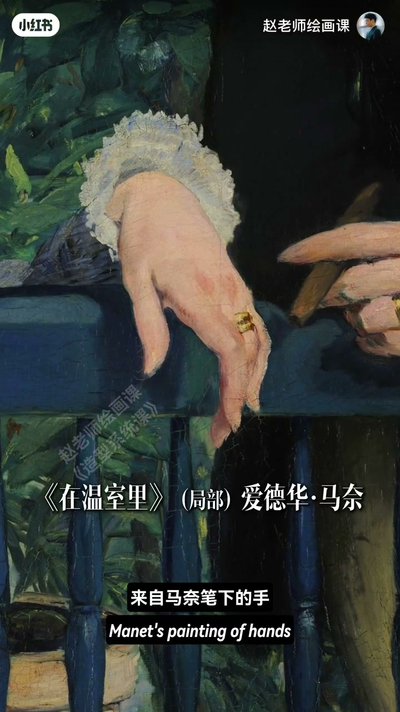
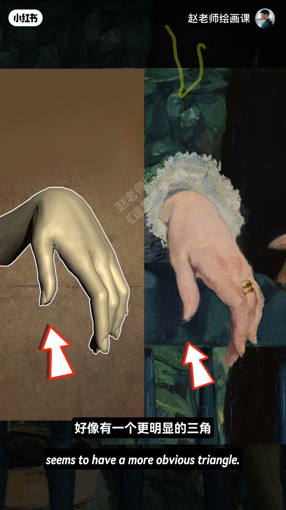
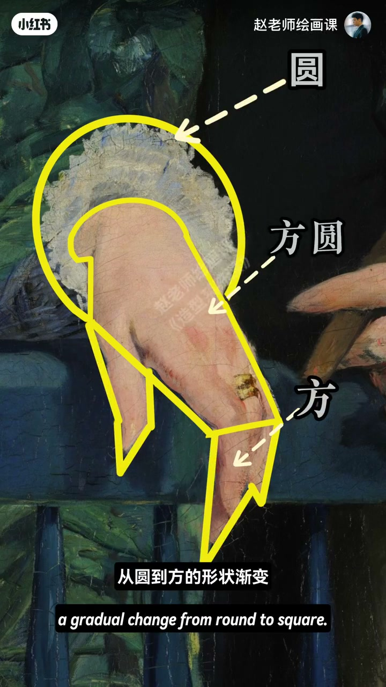
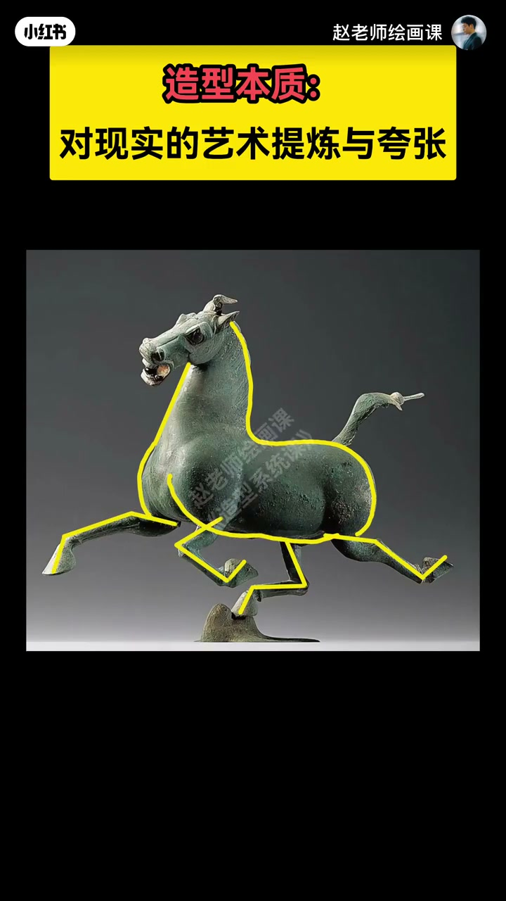

内容要点
什么是造型能力？看马奈《在温室里》的手：比真实更丰富饱满优雅。对照真手——真手更圆滑，画作更菱形明确；拇指三角更明显、中指拉长、指尖更锐利。袖口圆→手掌方中带圆→指尖夸张三角，圆到方的形状渐变即视觉韵律。东汉奔马身圆肢劲甚至违背真实步伐只为动态美，整体方圆方韵律。造型本质是艺术提炼与夸张，东西方共通。
知识结构
形状更清晰明确；圆→方圆→三角渐变＝韵律。
提炼夸张违步伐；方圆方韵律；造型是通用语言。
造型能力＝把真实改写成更清晰的形状关系与韵律，而不是被动照抄表象。
00:00-01:12马奈的手：明确形状＋方圆渐变
开场「什么是造型能力」后直接感受马奈笔下的手：好看、丰富饱满又优雅。对照真实的手：真手更圆滑，画作形状更明确，有点像菱形；拇指一块更明显三角，中指被拉长，指尖形状比真实更锐利。画家让每个部位都比真实更清晰明确，反而更好看。
未完：袖口圆、手掌方中带圆、指尖夸张三角——从圆到方的形状渐变，就是视觉韵律。这才是造型真谛。00:08／00:35／01:05 三帧把对照与渐变钉死。



01:12-02:00奔马：提炼夸张是通用语言
中国古代画家亦不缺极致理解：马身圆润饱满，四肢细劲有力，甚至不惜违背马的真实步伐，只为突出动态之美；整体形状分布也含方圆方韵律。
所以不是西方只会写实、东方只能写意——蕴含在风格表象下的造型本质，才是艺术最宝贵的通用语言。01:25 黄框「造型本质：对现实的艺术提炼与夸张」即本集命题。

完整转录（59段）
以下文本由 Whisper medium 模型自动转录，可能存在少量识别误差，已尽可能修正。
什么是造型能力
来 感受一下
来自马奈比夏的手
好看吧
我觉得是富贵丰富
又饱满优雅
怎么画出来的呢
来 我们对比一下真实的手
看看区别在哪
从麦伦克看
真实的手好像更圆滑一些
而右边的形状好像更明确
对 有点像一个菱形
很好
那内部形状呢
大拇指这一块
好像有一个更明显的三角
中指好像被拉长了
对 这个处境的形状
比真实的更加锐利
你看啊
画家笔下每个部位的形状
都比真实的更清晰明确
反而比现实的手
更好看
哎 没有完
袖口呢 是圆的
手掌呢 是方中带圆
手指尖呢
更加夸张的三角
发现了没有
这是一种从圆到方的形状渐变
对 这种渐变
就是一种视觉上的韵律感
厉不厉害
这才是造型的真谛
而我国
古代画家们自然也不缺
对造型的极致理解
马身圆润饱满
四肢却细劲有力
甚至啊
不惜违背马的真实步伐
只为突出马的动态之美
而整体的形状分布
也包含了一种
方圆方的韵律感
所以啊
不是西方只会写实
东方只能写意
越含在风格表象之下的
造型的本质
才是艺术最宝贵的通用语言
如果你想
摆脱被动照抄的困境
真正也有强大的造型能力
2月2日我在造型系统课上
等着你
拜拜